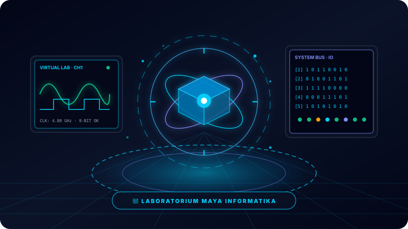
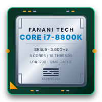
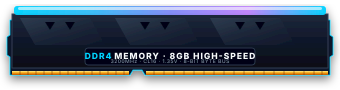
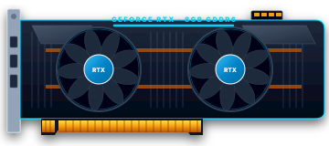
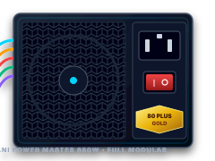
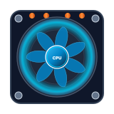

Eksplorasi Praktikum Virtual Sains Komputasi ⚡
Lingkungan simulasi dua arah berbasis komputer untuk membedah perangkat keras, bilangan biner, gerbang logika, dan representasi sub-piksel monitor. Siswa dapat merakit, menguji variabel, dan memverifikasi prinsip keilmuan secara mandiri tanpa batas alat fisik.

Uji Cepat: Gerbang Logika & Sakelar Listrik Digital
Coba langsung prinsip sakelar transistor komputer: ubah input sakelar A & B, pilih operator gerbang logika, lalu amati keluaran arus listrik!
Lab Perakitan Komputer: Rakit, Uji, & Pahami Mesin Komputasi 🖥️
Laboratorium Maya lengkap dengan aset visual SVG komponen presisi tinggi: Motherboard ATX, CPU LGA 1700, DDR4 RAM dengan RGB diffuser, NVMe M.2 SSD, kartu grafis GPU dual-fan berputar, dan PSU modular. Dilengkapi monitor CRT urutan POST boot sequence dan instrumen asesmen LKPD digital terintegrasi.

CPU
RAM SSD
SSD

GPU
PSU
COOLERDirancang sesuai juknis lomba Festival Biru Putih: bebas dependensi eksternal, audio synthesizer murni Web Audio API, rasio 16:9 lanskap, serta alur pedagogis linier (Teori → Prosedur → Simulasi → LKPD).
🧪 Katalog Modul Laboratorium Maya
Daftar eksperimen sains komputasi interaktif untuk pembelajaran mandiri Fase D:

Lab Perakitan Komputer
Hardware Von Neumann · Sakelar Biner · Loupe RGB
Simulasi laboratorium lengkap untuk mengenal dan merakit 5 komponen utama PC (CPU, RAM, SSD, GPU, PSU), bereksperimen dengan sakelar bilangan biner 8-bit, dan meneliti pencampuran warna sub-piksel layar monitor.
Lab Gerbang Logika & Sirkuit
Eksperimen merangkai gerbang logika dasar (AND, OR, NOT, XOR, NAND) secara visual untuk membuktikan tabel kebenaran (*truth table*) dan memahami cara transistor microchip melakukan komputasi boolean.
💡 Prinsip Pedagogik Laboratorium Maya
Standar media pembelajaran interaktif sesuai Juknis Festival Biru Putih Kemendikdasmen RI.
Simulasi didesain dengan rasio 16:9 mendatar untuk menghadirkan meja kerja laboratorium yang menyeluruh tanpa scroll (*scroll-free interaction*).
Umpan balik audio disintesis langsung di peramban (Web Audio API) untuk menghadirkan suara klik komponen, POST boot, error beeps, dan sakelar biner secara nyata.
Setiap eksperimen bermuara pada pengerjaan Lembar Kerja Peserta Didik digital interaktif (Pilihan Ganda, Benar/Salah, dan Menjodohkan) dengan penilaian skor otomatis.